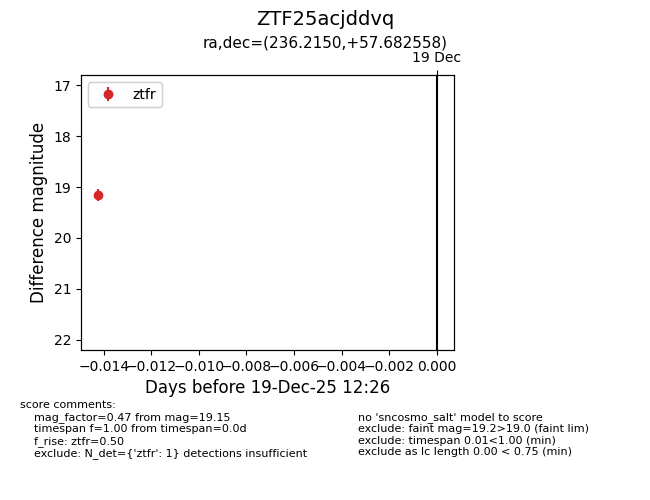
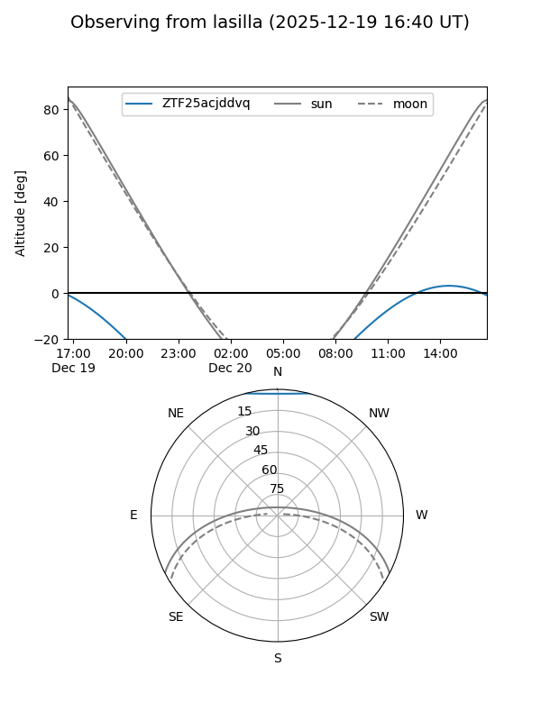
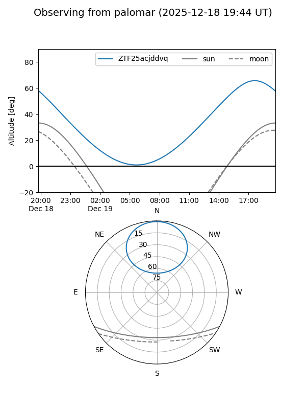

ZTF25acjddvq
Target ZTF25acjddvq at 2025-12-19 12:27
Aliases and brokers:
FINK: fink-portal.org/ZTF25acjddvq
Lasair: lasair-ztf.lsst.ac.uk/objects/ZTF25acjddvq
ALeRCE: alerce.online/object/ZTF25acjddvq
alt names
ZTF25acjddvq (ztf,fink_ztf)
Coordinates:
equatorial (ra, dec) = 236.2150,+57.68256
equatorial (HMS+DMS) = 15:44:51.61,+57:40:57.21
galactic (l, b) = (90.3764,+46.99604)
Flags:
Photometry:
last ztfr=19.15
1 ztfr detections
Lightcurve

Visibility


Additional plots